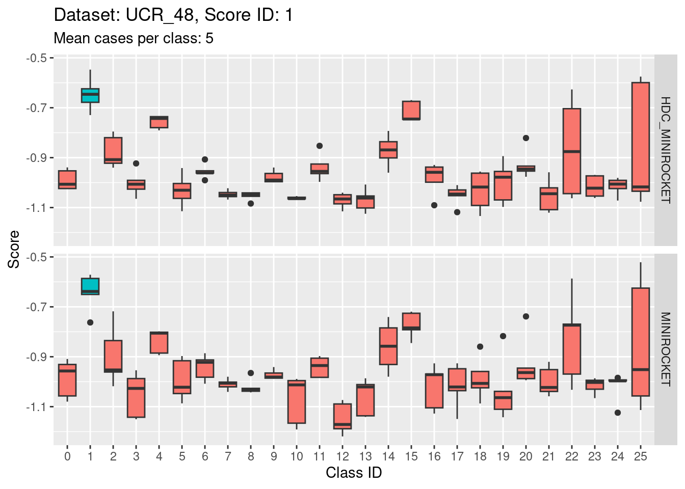
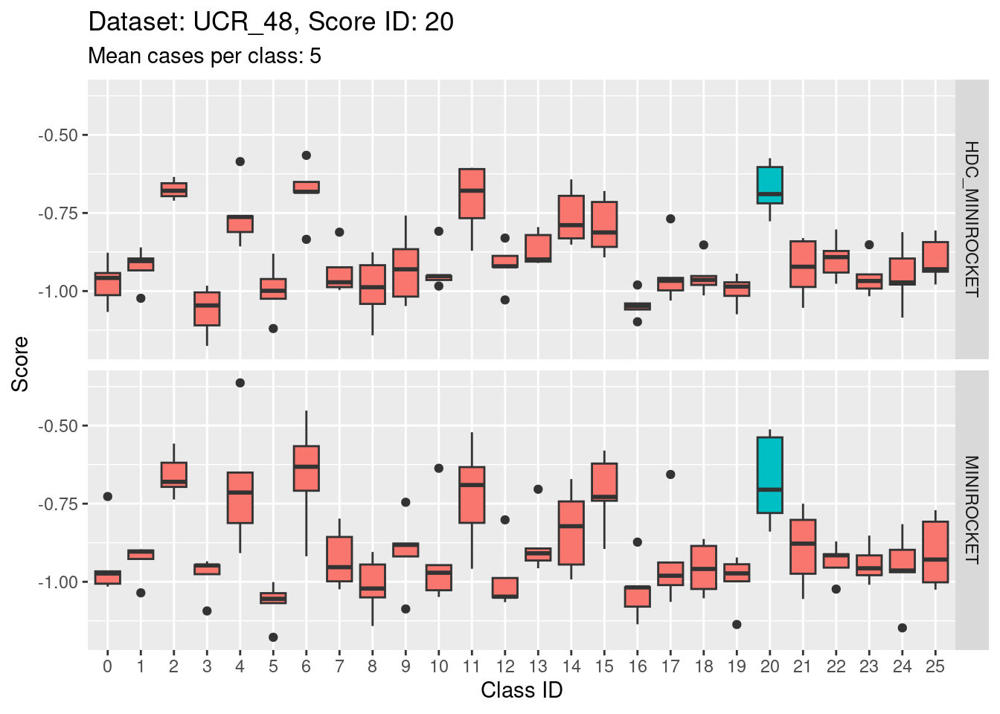

03_plot_independent_distributions
Ross Gayler
2023-01-19
Last updated: 2023-02-02
Checks: 7 0
Knit directory: multiclass_AUC/
This reproducible R Markdown analysis was created with workflowr (version 1.7.0). The Checks tab describes the reproducibility checks that were applied when the results were created. The Past versions tab lists the development history.
Great! Since the R Markdown file has been committed to the Git repository, you know the exact version of the code that produced these results.
Great job! The global environment was empty. Objects defined in the global environment can affect the analysis in your R Markdown file in unknown ways. For reproduciblity it’s best to always run the code in an empty environment.
The command set.seed(20230112) was run prior to running
the code in the R Markdown file. Setting a seed ensures that any results
that rely on randomness, e.g. subsampling or permutations, are
reproducible.
Great job! Recording the operating system, R version, and package versions is critical for reproducibility.
Nice! There were no cached chunks for this analysis, so you can be confident that you successfully produced the results during this run.
Great job! Using relative paths to the files within your workflowr project makes it easier to run your code on other machines.
Great! You are using Git for version control. Tracking code development and connecting the code version to the results is critical for reproducibility.
The results in this page were generated with repository version 55c2c04. See the Past versions tab to see a history of the changes made to the R Markdown and HTML files.
Note that you need to be careful to ensure that all relevant files for
the analysis have been committed to Git prior to generating the results
(you can use wflow_publish or
wflow_git_commit). workflowr only checks the R Markdown
file, but you know if there are other scripts or data files that it
depends on. Below is the status of the Git repository when the results
were generated:
Ignored files:
Ignored: .Rhistory
Ignored: .Rproj.user/
Ignored: renv/library/
Ignored: renv/sandbox/
Ignored: renv/staging/
Note that any generated files, e.g. HTML, png, CSS, etc., are not included in this status report because it is ok for generated content to have uncommitted changes.
These are the previous versions of the repository in which changes were
made to the R Markdown
(analysis/03_plot_independent_distributions.Rmd) and HTML
(docs/03_plot_independent_distributions.html) files. If
you’ve configured a remote Git repository (see
?wflow_git_remote), click on the hyperlinks in the table
below to view the files as they were in that past version.
| File | Version | Author | Date | Message |
|---|---|---|---|---|
| html | 413c810 | Ross Gayler | 2023-01-28 | end 2023-01-28 |
| Rmd | b13919c | Ross Gayler | 2023-01-26 | Add notebook 04_score_dependencies |
| html | b13919c | Ross Gayler | 2023-01-26 | Add notebook 04_score_dependencies |
| Rmd | 0cdb34a | Ross Gayler | 2023-01-24 | Initial commit |
| html | 0cdb34a | Ross Gayler | 2023-01-24 | Initial commit |
Dependencies
Read the saved example data.
d_scores <- readRDS(file = here::here("output", "d_scores.RDS")) |>
# convert case, class_id and score_id to integer factors for safety & better label order
dplyr::mutate(
case = forcats::as_factor(case),
class_id = forcats::as_factor(class_id),
score_id = forcats::as_factor(score_id)
)Introduction
Each score (corresponding to a unique value of score_id)
can be thought of as a feature detector for its target class. The score
should have a high value when the input case to the model is an exemplar
of the target class and a low value when the input case to the model is
an exemplar of a non-target class. The score can also be thought of as
the “decision variable” from Signal detection Theory.
The simple scenario typically used as the introduction to SDT can be thought of as 1-class categorisation. There is a single decision-variable/feature-detector and the task is to decide whether a “signal” is present or not. The SDT analysis of this scenario is based on comparing the distribution of the decision-variable/score when the signal is present and when it is absent. The degree to which the distributions are separated measures the degree to which the signal is discriminable from its absence.
We can apply this SDT framework to our multiclass categorisation task by considering each score ID in isolation. That is, we treat the multiclass categorisation task as a collection of \(k\) separate class detection tasks, one for each class. (There is a problem with this approach, but we’ll run with it for now because it’s conceptually simple.)
Looking at just one score ID (feature detector) we can plot the distribution of score values whhen the input is the target class and when the input is any other class. This is the usual SDT analysis with two distributions. We will extend this analysis by plotting a separate distribution of score values for each non-target class. We do this because:
- There is no reason to expect all non-target classes to be inherently equally discriminable from the target class.
- The process of building a multiclass categorisation model may favour the discriminability of some clas pairs over others (e.g. optimisation of some goodness of fit function would generally favour the discriminability of the highest frequency class pairs).
This analysis will allow us to evaluate the discriminability of the target class, induced by the corresponding score, with respect to each of the non-target classes. Note that these discriminability relationships are not necessarily symmetric. The discriminability of class A from class B is not guaranteed to be the same when measured with score A and score B.
Also note that for a given score ID, each of the distributions corresponding to a class ID is necessarily based on separate sets of cases (because the cases must be exemplars of different class IDs). This means that the class distributions are independent. However, this does not correspond to how the cases and scores are used in practice in the multiclass categorisation task. In the task, each single case is scored on each of the score IDs (feature detectors) and the case is categorised as belonging to the class with the highest corresponding score. Because all the scores are calculated from the same case it is possible that there are dependencies between the scores (this is the problem flagged earlier).
In fact, it is likely that there are dependencies between the scores. If the case has a high score on the score corresponding to one class then it is likely to have low scores on the scores corresponding to the other classes. This would mean that the classes are actually more discriminable than implied by the independent class distributions. We will ignore the issue of dependency between scores in this analysis notebook.
In this notebook we will plot the distributions of scores as an empirical analysis without calculating numerical summaries or diving into any theoretical models of how to do this. This is an extension of the “know your data” philosophy. The aim is to identify any qualitative patterns in the data that are noteworthy.
The commentary below is not exhaustive. It is intended to reflect some noteworthy patterns in the data without identifying every occurrence.
Independent distributions of scores
For each score ID within each dataset and model, plot the distributions of score values in response to each class ID. Plot the distributions separately for each combination of dataset and score ID to allow space for potentially writing commentary on each combination.
The distribution for the target class ID (corresponding to the score ID) should be higher than the distributions for the non-target class IDs
Create a function to produce the desired plot. Each distribution is displayed as a box plot.
plot_indep_distn <- function(
d, # data frame - superset of data to be plotted, compatible with d_scores
subset_d, # character[1] - name of dataset to plot
subset_s # integer[1] - identifier of score_id to plot
# value - ggplot plot object
) {
d <- d |>
# subset cases to one combination of dataset and score_id
dplyr::filter(dataset == subset_d, score_id == subset_s)
# calculate mean cases per class_id in data subset)
n_per_class <- nrow(d) / (length(unique(d$model)) * length(unique(d$class_id)))
# build plot
ggplot(d) +
geom_boxplot(aes(x = class_id, y = score_val, fill = class_id == score_id)) +
guides(fill = "none") +
facet_grid(rows = vars(model)) +
labs(
title = glue::glue("Dataset: {subset_d}, Score ID: {subset_s}"),
subtitle = glue::glue("Mean cases per class: {n_per_class}")
) +
xlab("Class ID") + ylab("Score")
}Dataset UCR_14
There are 342 to 350 cases per class in this dataset. That’s a reasonable number of cases to be visualising distributions with.
Score 0
| Version | Author | Date |
|---|---|---|
| 0cdb34a | Ross Gayler | 2023-01-24 |
- The target class (0) is quite discriminable.
- The target class is slightly less discriminable from class 1 than the other two non-target classes (class 1 distribution has greater overlap with class 0).
- With the eye of faith, the class 0 / class 1 discriminability is slightly higher for HDC_MINIROCKET than MINIROCKET (there’s slightly less overlap in HDC_MINIROCKET).
Score 2
| Version | Author | Date |
|---|---|---|
| 0cdb34a | Ross Gayler | 2023-01-24 |
- Possibly the most discriminating score (the separation of the target distribution from the non-target distributions seems larger than for the other scores).
Score 3
| Version | Author | Date |
|---|---|---|
| 0cdb34a | Ross Gayler | 2023-01-24 |
- Possibly the least discriminating score (the separation of the target distribution from the non-target distributions seems smaller than for the other scores).
Dataset UCR_48
Note that there are only 5 cases per class in this dataset. That’s a very small number to be visualising distributions with. Expecting boxplots based on 5 cases to be interpretable is rather optimistic
I expect the distributions to be very noisy, making them more uncertain for interpretation. This could be assessed more rigorously using bootstrap sampling. However, for the purposes of the current analysis i will not take that uncertainty into account and will take the distributions at face value for interpretation.
Score 0
| Version | Author | Date |
|---|---|---|
| 0cdb34a | Ross Gayler | 2023-01-24 |
- The target class (0) appears to be quite discriminable from the non-target classes.
Score 1

| Version | Author | Date |
|---|---|---|
| 0cdb34a | Ross Gayler | 2023-01-24 |
- The target class (1) is not strongly discriminable from the other classes.
- In particular, the target class is confusable with classes 15, 22, and 25.
Score 2
| Version | Author | Date |
|---|---|---|
| 0cdb34a | Ross Gayler | 2023-01-24 |
- This is possibly even less discriminating than score 1. The score distribution of the target class (2) appears even less separated from the score distributions of the other classes.
- The target class (2) is very confusable with classes 6, 11, and 20.
Score 5
| Version | Author | Date |
|---|---|---|
| 0cdb34a | Ross Gayler | 2023-01-24 |
- Score 5 is exceptionally good at discriminating class 5 from all the other classes. This appears to be the most discriminating score.
Score 12
| Version | Author | Date |
|---|---|---|
| 0cdb34a | Ross Gayler | 2023-01-24 |
- Score 12 is exceptionally good at discriminating class 12 from all the other classes. I guess this appears to be the most second most discriminating score (after score 5).


Score 18
| Version | Author | Date |
|---|---|---|
| 0cdb34a | Ross Gayler | 2023-01-24 |
- This case indicates that discriminability is not a property of classes in isolation. It is a joint property of the score and class. For the MINIROCKET model, score 18 is mostly unable to discriminate the target class (18) from class 5. However, score 5 was able to perfectly discriminate class 5 from all other classes. So, it’s not reasonable to make an isolated conclusion that class 5 is inherently easily discriminable.
Score 20

| Version | Author | Date |
|---|---|---|
| 0cdb34a | Ross Gayler | 2023-01-24 |
- Score 20 is possibly the least discriminating score. There are possibly 6 classes with score distributions strongly overlapping the score distribution of the target class (20).

Discussion
- The class score distributions give an idea about discriminability of the classes with respect to the different scores.
- The scores generally discriminate their target classes from the non-target classes.
- The degree of discriminability varies. Some target classes are excellently discriminated whereas others are poorly discriminated.
- Within a given score ID the discriminability of non-target classes from the traget class can vary significantly.
- The analyses in this notebook have ignored the possible dependency between scores within the same case. I suspect that this underestimates the true discriminability of the multiclass categorisation task.
sessionInfo()R version 4.2.2 Patched (2022-11-10 r83330)
Platform: x86_64-pc-linux-gnu (64-bit)
Running under: Ubuntu 22.04.1 LTS
Matrix products: default
BLAS: /usr/lib/x86_64-linux-gnu/blas/libblas.so.3.10.0
LAPACK: /usr/lib/x86_64-linux-gnu/lapack/liblapack.so.3.10.0
locale:
[1] LC_CTYPE=en_AU.UTF-8 LC_NUMERIC=C
[3] LC_TIME=en_AU.UTF-8 LC_COLLATE=en_AU.UTF-8
[5] LC_MONETARY=en_AU.UTF-8 LC_MESSAGES=en_AU.UTF-8
[7] LC_PAPER=en_AU.UTF-8 LC_NAME=C
[9] LC_ADDRESS=C LC_TELEPHONE=C
[11] LC_MEASUREMENT=en_AU.UTF-8 LC_IDENTIFICATION=C
attached base packages:
[1] stats graphics grDevices datasets utils methods base
other attached packages:
[1] glue_1.6.2 ggplot2_3.4.0 forcats_0.5.2 dplyr_1.0.10
[5] here_1.0.1 workflowr_1.7.0
loaded via a namespace (and not attached):
[1] tidyselect_1.2.0 xfun_0.36 bslib_0.4.2 colorspace_2.1-0
[5] vctrs_0.5.2 generics_0.1.3 htmltools_0.5.4 yaml_2.3.7
[9] utf8_1.2.2 rlang_1.0.6 jquerylib_0.1.4 later_1.3.0
[13] pillar_1.8.1 withr_2.5.0 lifecycle_1.0.3 stringr_1.5.0
[17] munsell_0.5.0 gtable_0.3.1 evaluate_0.20 labeling_0.4.2
[21] knitr_1.42 callr_3.7.3 fastmap_1.1.0 httpuv_1.6.8
[25] ps_1.7.2 fansi_1.0.4 highr_0.10 Rcpp_1.0.10
[29] renv_0.16.0 promises_1.2.0.1 scales_1.2.1 cachem_1.0.6
[33] jsonlite_1.8.4 farver_2.1.1 fs_1.6.0 digest_0.6.31
[37] stringi_1.7.12 processx_3.8.0 getPass_0.2-2 rprojroot_2.0.3
[41] grid_4.2.2 cli_3.6.0 tools_4.2.2 magrittr_2.0.3
[45] sass_0.4.5 tibble_3.1.8 whisker_0.4.1 pkgconfig_2.0.3
[49] ellipsis_0.3.2 rmarkdown_2.20 httr_1.4.4 rstudioapi_0.14
[53] R6_2.5.1 git2r_0.30.1 compiler_4.2.2